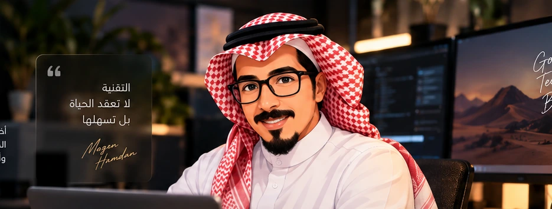
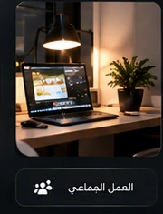

دعم المستخدمين
مساعدة فعالة وسريعة لحل المشكلات وتحسين تجربة العمل.
أخصائي دعم فني في مجال تقنية المعلومات، أمتلك خبرة عملية في دعم المستخدمين والأنظمة والشبكات، وأسعى دائماً لتحسين تجربة المستخدم ورفع كفاءة بيئة العمل من خلال حلول تقنية فعالة ومستدامة.

مساعدة فعالة وسريعة لحل المشكلات وتحسين تجربة العمل.
تحليل الأعطال وتقديم حلول عملية قابلة للاستمرار.
دعم البنية التقنية والاتصال وخدمات المستخدمين.
تهيئة الأجهزة وأنظمة التشغيل والبرامج المؤسسية.
تشخيص وحل المشكلات بسرعة دون تعطيل الأعمال.
رفع الاستقرار والإنتاجية من خلال التحسين المستمر.

أنا مازن حمدان، أخصائي دعم فني في مجال تقنية المعلومات. أمتلك خبرة في دعم المستخدمين والأنظمة والشبكات، وأهتم بتقديم حلول تقنية عملية وفعالة تساهم في تحسين الإنتاجية وبيئة العمل.
المزيد عني ←Ticketing System · Support · Maintenance
Networking · Maintenance · Programming · Databases
المساهمة في ترقية مجموعة كبيرة من أجهزة المستخدمين وتحسين آلية النشر لتقليل التدخل اليدوي.
دعم مواقع متعددة وحل مشكلات الأجهزة والشبكات والطباعة مع المحافظة على استمرارية العمل.
تشخيص أعطال Canon والطباعة السحابية ومشكلات الشبكة وخدمات UniFLOW بطريقة منظمة.
بكالوريوس تقنية المعلومات من جامعة الملك عبدالعزيز، بالإضافة إلى دورات تقنية ولغوية مبكرة دعمت مساري في الشبكات والدعم الفني.
King Abdulaziz University · Good
King Abdulaziz University · Good
Microsoft Windows IC3 · ICDL · Intensive English 1/2 · Programming Principles in JAVA
يمكنك التواصل معي مباشرة عبر البريد الإلكتروني أو الهاتف، أو زيارة حسابي LinkedIn وGitHub.